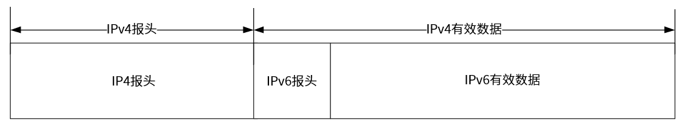
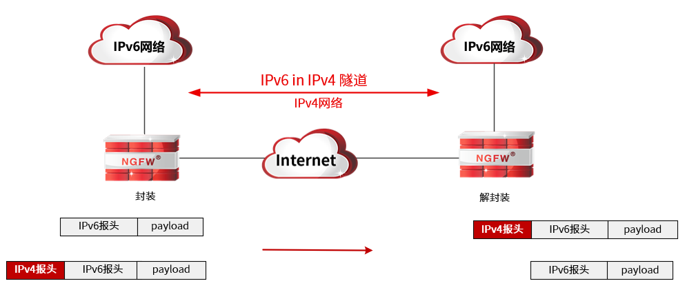
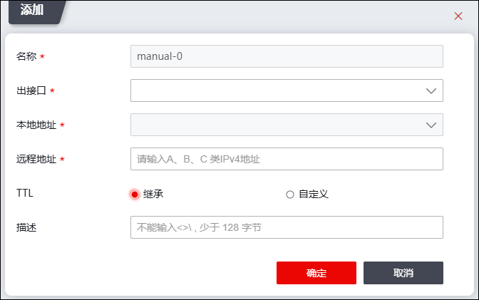

IPv6 in IPv4手动隧道是通过IPv4网络连接两个IPv6孤岛的点对点隧道，主要应用于两个IPv6与IPv4网络的边缘路由设备之间或终端系统与边缘路由设备之间。IPv6 in IPv4手动隧道只需在边缘设备中配置隧道信息，IPv6孤岛间的主机无需进行任何特殊配置即可实现互通。IPv6 in IPv4手动隧道实现机制是在IPv6数据报文前封装IPv4的报头，通过隧道将IPv6报文穿越IPv4网络，实现隔离的IPv6网络能互相通信。报文封装格式如下：

IPv6 in IPv4手动隧道与GER连接IPv6孤岛原理相同，除隧道对报文的封装格式不同外，均按照“隧道起点封装-->路由转发-->隧道终点解封装”流程进行，隧道对报文的处理过程如下：

（1）IPv6网络中的主机发送IPv6报文，到达隧道的源端；
（2）隧道的源端设备根据路由表发现该报文是通过隧道进行转发，将会在IPv6报文前封装上IPv4的报文头（源IP为隧道的“本地地址”，目的地址为隧道的“对端地址”），通过隧道的实际物理接口将报文转发出去；
（3）封装报文通过隧道到达隧道的目的端，目的端设备根据报文的目的地址判断是到达本机的报文后，对报文进行解封装；
（4）目的端设备根据解封装后的IPv6报文的目的地址将报文进行转发；如果目的地址就是本机，则将IPv6报文转给上层协议处理。
配置NGFW的IPv6 in IPv4手动隧道的操作如下：
| 步骤1 | 选择 。 |
| 步骤2 | 添加IPv6 in IPv4手动隧道。 |
1）点击『添加』，如下图所示。

各项参数的具体说明如下表所示。
参数 |
说明 |
|---|---|
名称 |
必选项，在下拉框选择隧道名称，不同的IPv6 in IPv4手动隧道需选择不同的隧道名称，隧道名称以“manual-”开头。 |
出接口 |
必选项，在下拉框中选择隧道出接口，对于需经该隧道处理的报文从指定隧道出接口转发出去。 |
本地地址 |
必选项，在下拉框中选择本地接口中用于与IPv6 in IPv4手动隧道对端进行通信的接口IPv4地址。 |
远程地址 |
必填项，配置IPv6 in IPv4手动隧道的对端IP地址，需设置隧道对端与本端本地地址可通信的对端接口IP地址。 说明： 1）IPv6 in IPv4隧道本端的“对端地址”需与对端的“本地地址”一致，否则，隧道将不能建立。 |
TTL |
可选项，设置IPv6 in IPv4手动隧道本端设备与对端设备可经过的最大路由器数目。可选项：继承、自定义。 Ø继承：TTL值继承原数据包IP报头中的TTL值。 Ø自定义：TTL值自定义，取值范围为1-255。 |
描述 |
可选项，输入6IN4隧道简单的描述信息。 |
2）点击【确定】按钮完成IPv6 in IPv4手动隧道的创建。新添加的IPv6 in IPv4手动隧道会显示在界面上。
|
²IPv6 in IPv4手动隧道创建完成后，会生成一个与隧道名称一致的虚接口。如隧道名称命为manual-0，则虚接口为manual-0。 |

| 步骤3 | 配置IPv6 in IPv4隧道虚接口IP地址。 |
点击隧道列表“接口属性”列的图标，可在弹出的窗口中配置IPv6 in IPv4隧道虚接口的IP地址（隧道虚接口IP地址要求与隧道对端设备的隧道虚接口在同一个网段）。
| 步骤4 | 选择 ，配置IPv6 in IPv4路由。 |
如果配置了出接口为IPv6 in IPv4虚接口的路由，匹配该路由的数据报文则需通过指定IPv6 in IPv4隧道传输。关于路由的配置具体请参见 静态路由。